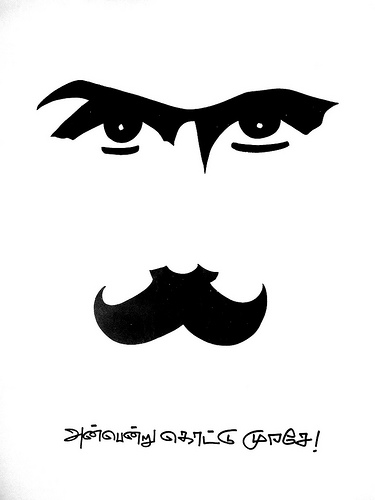

அன்பென்று கொட்டு முரசே!
Posted on 27 September 2010 in Literature

தேடிச் சோறுநிதந் தின்று
பல சின்னஞ் சிறுகதைகள் பேசி
மனம் வாடித்துன்ப மிக உழன்று
பிறர் வாடப்பல செயல்கள் செய்து
நரைகூடிக் கிழப்பருவ மெய்தி
கொடுங்கூற்றுக் கிறையெனபின் மாயும்
பல வேடிக்கை மனிதரைப் போலே
நான் வீழ்வே னென்று நினைத்தாயோ?
-பாரதி
இந்த வைர வரிகளை தந்த முண்டாசுக் கவியே! நின்னை நேசிக்கும் நான், என் படைப்புகளை நிந்தன் பாதக்கமலங்களுக்கு சமர்ப்பிக்கிறேன்.
இனி உன் வழி அன்பென்று கொட்டும் முரசு!!!!!
Comments